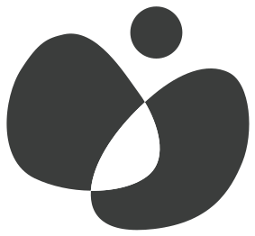

Qué significa que haya dirección clínica
Que nada llega a tu pantalla sin pasar por el criterio de una profesional. Y que cuando algo conviene consultarlo en persona, la app te lo dice en vez de intentar resolverlo por su cuenta.
Nítia te acompaña con pasos concretos antes, durante y después del momento difícil. Sin juicios, y sin que haga falta un diagnóstico.
Captura de la app
· pendiente ·
Son las siete de la tarde. El día se ha torcido y no sabes si insistir, cambiar de plan o dejarlo pasar.
Hay mil consejos en internet y ninguno habla de tu hijo. Para ese minuto exacto existe Nítia.

Nítia no es una recopilación de consejos de internet. Lo que la app te propone pasa antes por dirección clínica.
[Nombre y apellidos]
Dirección clínica de Nítia
Que nada llega a tu pantalla sin pasar por el criterio de una profesional. Y que cuando algo conviene consultarlo en persona, la app te lo dice en vez de intentar resolverlo por su cuenta.
Nítia parte de que cada niño funciona como funciona y de que comprenderlo es lo primero. La familia es parte activa del proceso, nunca la culpable de lo que ocurre.
Que esto no sustituye una valoración profesional ni convierte la app en terapia. El diagnóstico y el tratamiento son otra cosa, y se hacen en consulta.
La mayoría de las aplicaciones del sector le hablan al niño. Nítia te habla a ti, que eres quien está delante de la situación.
Dos o tres propuestas al día, no una lista imposible. Con pasos concretos y el nivel de ayuda que cada una necesita. Es lo primero que ves al abrir la app, y lo único que hace falta mirar si el día viene justo.
Un botón para el momento difícil. Ordena lo que está ocurriendo y te guía paso a paso, mientras ocurre.
Cada episodio queda registrado sin que tengas que hacer nada. El plan se ajusta con lo que va aprendiendo de tu hijo.
Si algo conviene consultarlo con un profesional, Nítia te lo dice. Con claridad y sin alarmismo.
Unas preguntas al principio: edad, cómo se comunica, qué situaciones se repiten y qué suele funcionar.
Dos o tres cosas concretas para hoy. Marcas si funcionaron y el plan se ajusta solo.
Si algo se desborda, Nítia ordena la situación contigo y te da el siguiente paso.
Captura · pendiente
Captura · pendiente
Captura · pendiente
Si estás en lista de espera, en proceso de valoración o simplemente sin saber por dónde empezar, Nítia también es para ti.
Preferimos decirlo antes de que la descargues.
Estará disponible en App Store y Google Play. Mientras tanto, puedes seguir la cuenta atrás en Instagram.
Déjanos tu correo y te avisamos el día que Nítia esté disponible.
Precio de lanzamiento, para suscripciones antes del 31 de diciembre de 2026
19,95 €al mes
199,95 €al año
Precio general: 24,95 € al mes o 239,95 € al año.
Los primeros 30 días, gratis.
IVA incluido. [Duración del precio de lanzamiento: pendiente de confirmar.]
No. Nítia funciona igual si estás en lista de espera, en proceso de valoración o sin haber consultado todavía. Lo que necesita saber es cómo es tu hijo, no qué etiqueta tiene.
[Fecha o ventana de lanzamiento.]
24,95 € al mes o 239,95 € al año, IVA incluido, con los primeros 30 días gratis. Si te suscribes antes del 31 de diciembre de 2026, tienes precio de lanzamiento: 19,95 € al mes o 199,95 € al año. España es el primer país; después llegará a Latinoamérica.
[Qué datos se recogen, para qué, dónde se guardan y cómo se eliminan. Responder con la política de privacidad publicada.]
No, y no pretende hacerlo. Nítia acompaña las horas en las que no hay nadie más, y te avisa cuando algo conviene consultarlo con un profesional.
Sí. Abuelos, familia extensa y cuidadores profesionales pueden usarla igual.